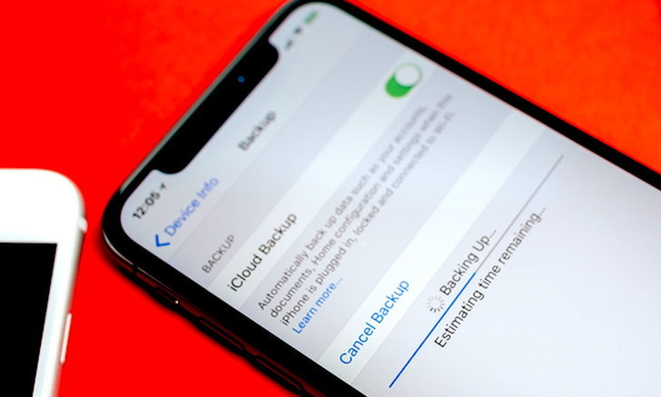
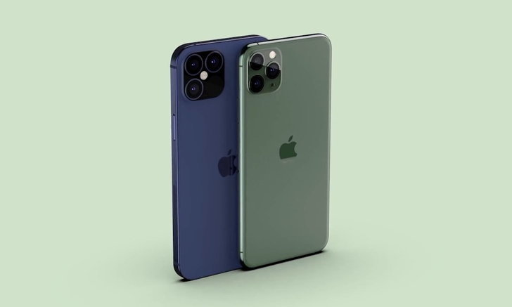
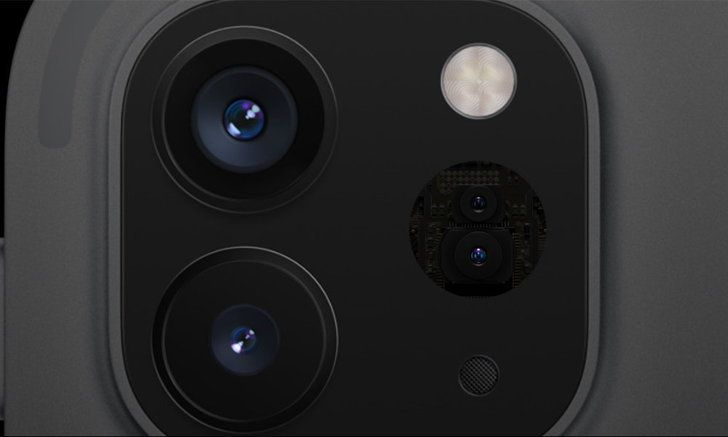
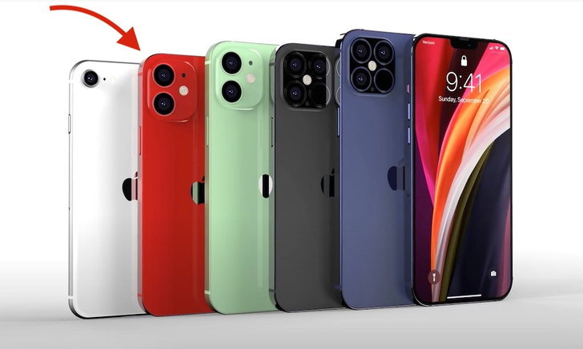
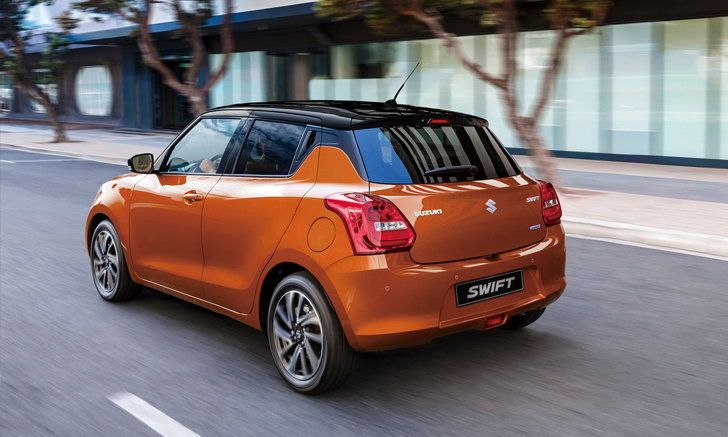

5+1 กับความเป็นไปได้ที่คุณจะได้ใน iPhone 12 ที่กำลังจะเปิดตัว
จากภาพหลุดทั้งหมดที่เปิดเผยออกมารวมถึงต้นแบบหรือ Mockup ทั้งหมดนั้น ก็ทำให้เกิดความเป็นไปได้ว่า iPhone 12 อาจจะมาพร้อมกับดีไซน์เหลี่ยมในแบบเดียวกับ iPad และตำแหน่งของปุ่ม Power จะขยับลงมาทำให้ถาดใส่ซิมนั้นจะลงไปอยู่ด้านล่างเยอะมากขึ้น เป็นผลจากการออกแบบกล้องใหม่ที่ใช้พท้นที่มากขึ้น
ส่วนด้านหน้านั้นก็จะมีการลดขนาด Notch ให้เล็กลงแต่ยังมีเซนเซอร์แบบเดียว และดีไซน์ของให้บางลงจนแทบจะเรียกว่าไม่มีขอบเลยก็ว่าได้
ความจำเยอะขึ้นทั้ง RAM / ROM จาก iPhone รุ่นถูกที่คุณจะพบความจำแค่ 16GB คงต้องลืมภาพไปให้หมด เพราะว่า iPhone 12 นั้นในรุ่นปกติ จะมีความจำเริ่มต้นที่ 128GB เฉพาะรุ่น iPhone 12 Pro คาดว่าเป็นการแก้ปัญหาเรื่องความจำของ iPhone ที่น้อยไปได้ ส่วน iPhone 12 ปกติจะได้ความจำขนาด 64GB ในรุ่นเริ่มต้น
ทั้งนี้ RAM ของเครื่องก็อาจจะมีการขยายให้มากขึ้นโดยเฉพาะรุ่นโปร จะทำให้การทำงานของเครื่องลื่นไหลมากขึ้น
สีใหม่ Dark Blue การเปิดตัวของ iPhone ทุกปีมักจะมีสีสันใหม่มาให้เลือกเสมอ ในปีที่แล้ว iPhone 11 Pro Series มีสีใหม่อย่าง Midnight Green และเป็นสี Signature ของรุ่นไปเลย สำหรับในปีนี้ในตัว iPhone 12 Pro อาจจะมีสีใหม่ตามข่าลือว่าเป็นสี Dark Blue น้ำเงินออกเข้มๆ สักหน่อย ก็เป็นสีที่น่าจับตามองว่าอาจจะมีให้เลือกเช่นเดียวกัน
แต่ iPhone 12 ปกติอาจจะมีให้เลือกเป็นสีสันตามรุ่นก่อนหน้านี้ ต้องดูว่าโทนของมันนั้นจะออกเป็นทางแบบ iPhone XR หรือ iPhone 11 กันต่อไป
กล้องหลังเพิ่ม LiDAR Sensor ถึงแม้ว่า iPhone 12 มีข้อมูลเปิดเผยว่ากลองนั้นจะไม่ได้แตกต่างอะไรจาก iPhone 11 แต่สำหรับ iPhone 12 Pro จะมีการเพิ่มฟีเจอร์ LiDAR Sensor ที่ทำให้การมองวัตถุ AR ทำได้ละเอียดมากขึ้น ทั้งนี้เซนเซอร์ดังกล่าวถูกติดตั้งครั้งแรกใน iPad Pro ในปี 2020
อย่างตามก็มีข้อมูลออกมาเปิดเผยว่า อาจจะมีการเปิดตัว Apple Glass ซึ่งเป็นแว่นสำหรับใช้งานมองภาพ AR ครั้งแรกของค่ายออกมาเช่นเดียวกัน
มีให้เลือก 4 รุ่นกับ 3 ขนาดตัวเครื่อง ข่าวดีอีกเรื่องที่ใครต้องการ iPhone 12 นั้นก็มีให้เลือกแบบจุใจอย่างมากเพราะขนาดหน้าจอ 5.4 นิ้ว กับ iPhone 12, 6.1 นิ้ว กับ iPhone 12 Max, 6.1 นิ้วกับ iPhone 12 Pro และ 6.7 นิ้วกับ iPhone 12 Pro Max ทั้งนี้หน้าจอของ iPhone 12 นั้นจะใหญ่กว่า iPhone SE
และมีความเป็นไปได้ว่า iPhone 12 เปิดตัวแล้วอาจจะทำให้รุ่นเก่ายุติการขายไปเลยก็เป็นไปได้
ส่องสเปควางขายยุโรป! Suzuki Swift 2021 ปรับโฉมเพิ่มแรงม้าบวกเทคโนโลยีใหม่
ได้เวลาปรับโฉมอีกครั้งสำหรับ Suzuki Swift รถยนต์นั่งขนาดเล็กจากค่าย Suzuki บริษัทผลิตรถยนต์ของญี่ปุ่น ที่มีแผนเตรียมปรับโฉมใหม่รับปี 2021 เพื่อวางจำหน่ายในทวีปยุโรปในช่วงปลายปีนี้โดยรูปลักษณ์ภายนอกต้องบอกว่ามันดูเรียบหรูกว่าเดิม ด้วยการปรับปรุงกระจังหน้าใหม่ ไฟหน้า LED ทั้งด้านหน้าและด้านหลังดีไซน์ใหม่ เพิ่มความโดดเด่นด้วยไฟตัดหมอกด้านหน้าแบบฮาโลเจน กระจกมองข้างติดตั้งไฟเลี้ยว LED และล้อออัลลอยขนาด 16 นิ้ว
ภายในห้องโดยสารมาพร้อมจอแสดงผล Smartlink พร้อมวิทยุ DAB มีกล้องมองหลัง พวงมาลัยหุ้มหนัง และระบบเทคโนโลยีความปลอดภัยมากมายที่เพิ่มมา ประกอบด้วยระบบเตือนการออกนอกช่องทาง, ระบบเตือนด้านหลัง, ระบบตรวจจับจุดบอด และอื่นๆ อีกเพียบ
ในส่วนของขุมกำลังมีการอัพเกรดเครื่องยนต์ 1.2 ลิตร ที่พัฒนาให้มีกำลังสูงสุดที่ 82 แรงม้า แรงบิดสูงสุด 107 นิวตันเมตร สามารถเร่งความเร็ว 0-100 ได้ในเวลา 12.2 วินาที จับคู่กับเกียร์ CVT ระบบขับเคลื่อนสี่ล้อ ขณะที่รุ่นไฮบริดมีการปรับปรุงใหม่เช่นกันโดยเพิ่มแบตเตอรี่ลิเธียมไอออนความจุที่สูงขึ้นจาก 3Ah เป็น 10 Ah
สำหรับ Suzuki Swift 2021 จะเปิดตัวในยุโรปทั้งหมด 6 รุ่นย่อย ประกอบด้วย SZ-L, SZ-T, SZ-T CVT, SZ5, SZ5 CVT และ SZ5 AllGrip โดยที่สหราชอาณาจักร ราคาเริ่มต้นที่ 14,749 ปอนด์ (ประมาณ 596,000 บาท) ขณะที่รุ่นท็อปสุดจะอยู่ที่ราคา 18,749 ปอนด์ (ประมาณ 760,000 บาท)